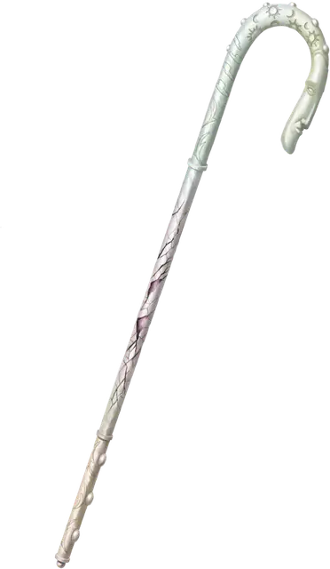

Трость Рао
Crook of Rao
Чудесный предмет, артефакт (требуется настройка)

Много веков назад безмятежный бог Рао создал инструмент для защиты своих неоперившихся верующих от зла Нижних Планов. Тем не менее, спустя многие эпохи смертные разработали свои собственные методы борьбы с экзистенциальными угрозами, и о трости позабыли. Однако в последние века Трость Рао была снова обнаружена и использована против растущей власти Иггвилв, Королевы Ведьм (одно из имён волшебницы Таши). И, хотя Иггвилв и была побеждена, она сумела повредить трость во время битвы, заразив её коварным проклятием и потенциалом для будущей победы. После этого трость была снова утеряна. Время от времени она снова появляется, но знаменитый артефакт уже не тот, что прежде. Независимо от того, осознают ли носители артефакта его полную угрозу или нет, немногие рискнут использовать трость Рао — возможно, в последний раз.
Случайные свойства. Этот артефакт обладает следующими случайными свойствами, которые вы можете определить, совершив бросок по таблицам в разделе «Артефакты» «Руководства Мастера»:
- 2 малых положительных свойства
- 1 основное положительное свойство
- 1 малое отрицательное свойство
Заклинания. Трость имеет 6 зарядов. Удерживая трость, вы можете действием израсходовать 1 или более зарядов, чтобы наложить одно из следующих заклинаний (Сл спасброска 18): аура жизни [aura of life] (2 заряда), аура очищения [aura of purity] (2 заряда), изгнание [banishment] (1 заряд), маяк надежды [beacon of hope] (1 заряд), множественное лечение ран [mass cure wounds] (3 заряда). Трость ежедневно восстанавливает 1к6 зарядов на рассвете.
Абсолютное изгнание. Пока вы настроены на трость, вы можете, держа её, потратить 10 минут, чтобы изгнать всех исчадий в пределах 1 мили от вас кроме самых могущественных. Никакое исчадие с показателем опасности 19 или выше не подвержено этому эффекту. Каждое изгнанное исчадие отправляется обратно на свой родной план и не может вернуться на тот план, с которого трость Рао изгнала его, в течение 100 лет.
Испорченная матрица. Всякий раз, когда используется «Абсолютное изгнание» или когда последний заряд трости Рао оказывается израсходован, бросьте кость по таблице «Экстрапланарная отдача». Каждое из существ, вызванных в результате этого эффекта, появляется в случайном свободном пространстве в пределах 60 футов от вас. Призванные существа не находятся под вашим контролем.
Экстрапланарная отдача
| к100 | Эффект |
| 1-25 | Открывается портал на случайный план. Портал закрывается через 5 минут. |
| 26-45 | Появляются 2к4 бесов [imps] и 2к4 квазитов [quasits]. |
| 46-60 | Появляются 1к8 суккубов [succubi]/инкубов [incubi]. |
| 61-70 | Появляются 1к10 шипастых дьяволов [barbed devil] и 1к10 вроков [vrock]. |
| 71-80 | Появляются 1 арканалот [arcanaloth], 1 ночная карга [night hag] и 1 ракшас [rakshasa]. |
| 81-85 | Появляются 1 ледяной дьявол [ice devil] и 1 марилит [marilith]. |
| 86-90 | Появляются 1 балор [balor] и 1 исчадие преисподней [pit fiend]. По усмотрению Мастера вместо этого может открыться портал к месторасположению архидьявола или демонического повелителя, закрывающийся через 5 минут. |
| 91-00 | Проклятие Иггвилв (см. свойство «Проклятие Иггвилв»). |
Проклятие Иггвилв. Когда трость в последний раз была использована против Иггвилв, Королева Ведьм разозлилась на артефакт, заразив его магическую матрицу. С годами это проклятие распространилось внутри трости, угрожая жестоко исказить её древнюю магию. Если это произойдёт, то трость Рао в её текущем известном виде будет уничтожена, её магическая матрица вывернется и взорвется порталом диаметром 50 футов. Этот портал функционирует как постоянное заклинание врата [gate], наложенное Иггвилв. Затем врата один раз за раунд с инициативой в 20 громко произносят имя исчадия голосом Иггвилв и делают это до тех пор, пока не призовут каждое исчадие, когда-либо изгнанное Тростью Рао. Если исчадие всё ещё существует, оно придёт через врата. Этот процесс занимает восемнадцать лет, в конце которых врата становятся постоянным порталом на Пазунию, первый слой Бездны.
Уничтожение или починка трости. Трость Рао можно либо уничтожить, либо починить, отправившись на гору Целестию и получив слезу от вечно безмятежного бога Рао. Один из способов заставить бесчувственного бога плакать — это воссоединить Рао с духом его первого последователя, который давным-давно ищет откровений за пределами мультивселенной. Трость растворится, если будет погружена в божью слезу на год и один день. Если промывать трость в слезе ежедневно в течение 30 дней, то она потеряет свойство «Испорченная матрица».